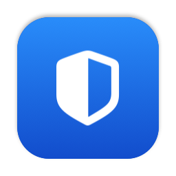

OpenBlock
مانع إعلانات مفتوح المصدر لسفاري على ماك. يحمّل قوائم الفلاتر الحقيقية ويحوّلها إلى صيغة قواعد سفاري الأصلية، ثم يسلّمها للمتصفح الذي يصنّفها بمحرّكه الخاص: لا شيء يقف بينك وبين الويب، ولا شيء يُرسل إلى أي مكان. يعيش في شريط القوائم ويحدّث القوائم تلقائيًا كل أربع وعشرين ساعة.
المحتوى أربعة مانعات محتوى لسفاري بميزانية 150 ألف قاعدة لكل منها، قوائم AdGuard وEasyList وEasyPrivacy أو أي رابط تضيفه، قواعد شخصية وقائمة سماح، وامتداد ويب للسكربتلات وCSS الموسّع لما لا تعبّر عنه مانعات المحتوى.
- Swift
- macOS 15+
- GPL-3.0